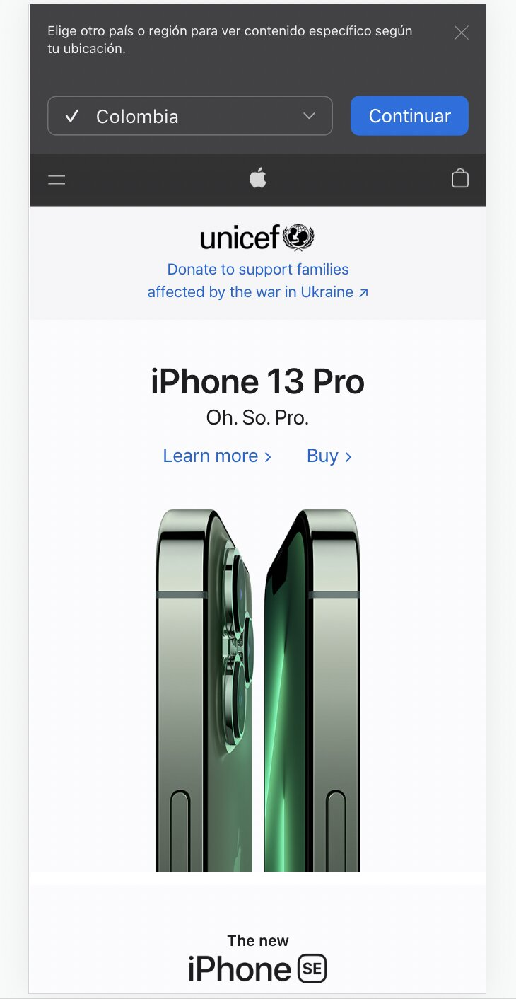
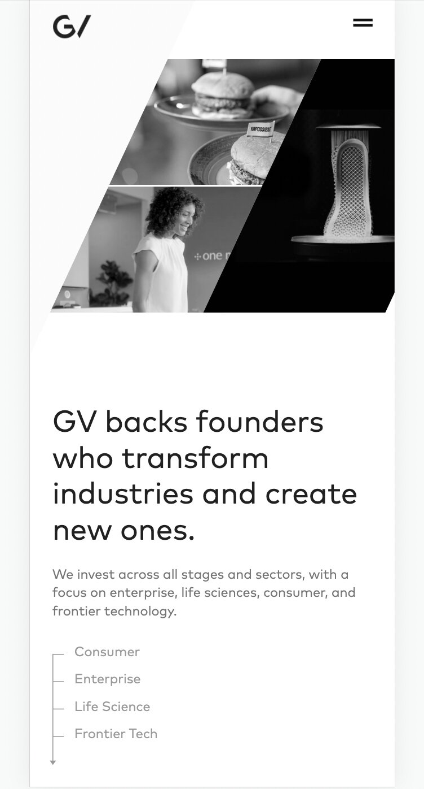
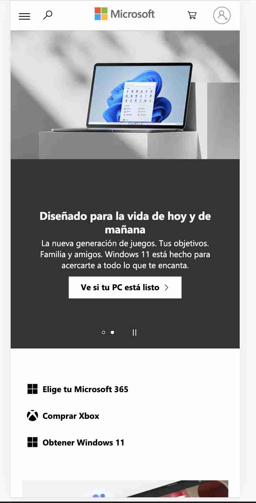

White space
Apple
https://www.apple.com/ On this page, we can see a perfect example of how the creators want to show the principal object to the public and how the white spaces help make this reaction, centering the item and leaving the side parts blank.
Rule of thirds
Google Ventures
https://www.gv.com/portfo In this example, we can see how the main image takes the attention of the public because it complies with the rule of thirds, the user will look at the image and will relate it to adventures.
Visual Hierarchy
Microsoft
https://www.microsoft.com I chose the Microsoft website because we can see how the creator wants to show us the importance of the first post, which is about Windows 11 and how he wants and as our attention is first focused on that ad than on the entire page. After looking at the initial part, there are other secondary sections that we will continue to see according to their hierarchy.